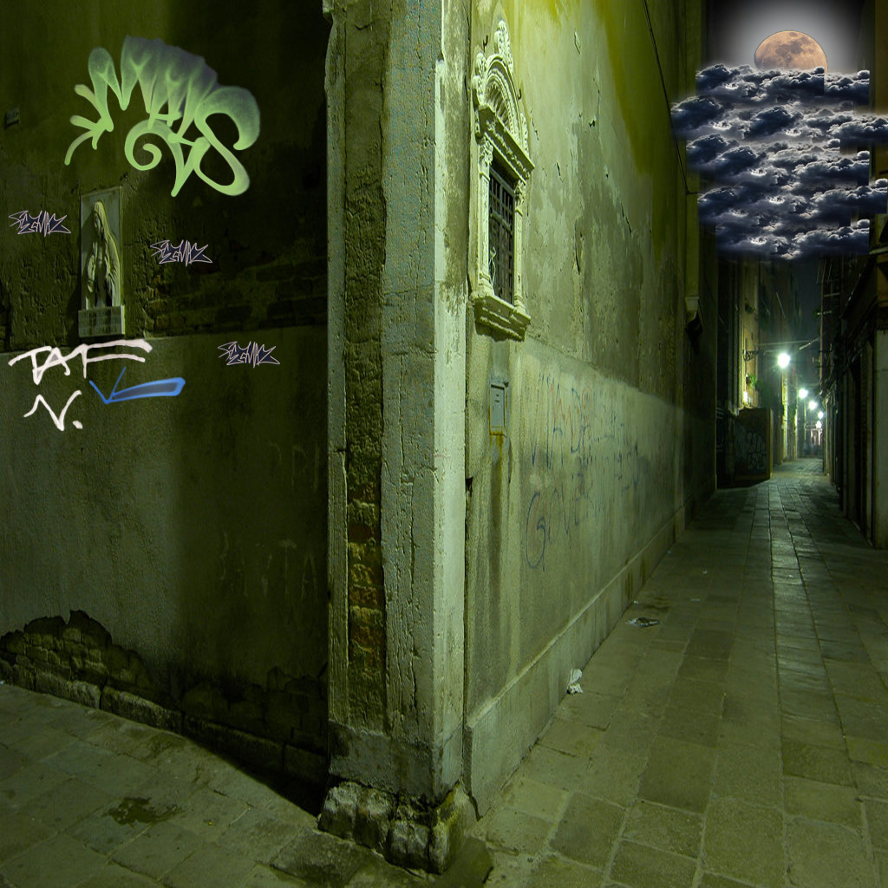

WHERE MARS LIVES
Mars grew up in a horrible place. He always had to look over his shoulder when he walked outside, so he hardly ever went out alone and had to be accompanied by his older sister. to be able to go into his aparment he has to go into a allyway thats really dark even in the morning so he has to be careful ever moment that he's try's to go to school Mars has seen so many fights,people getting hurt or even worse, He hates where he grew up Main Menu